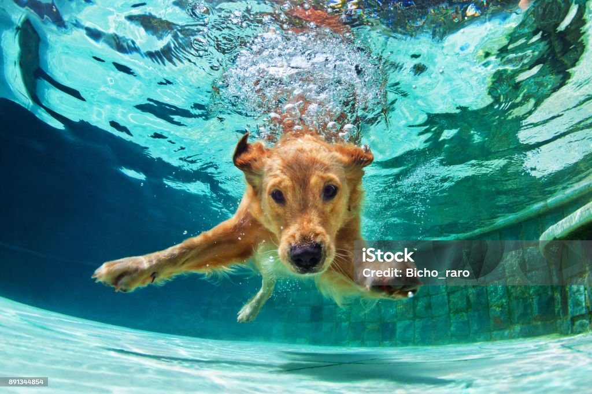
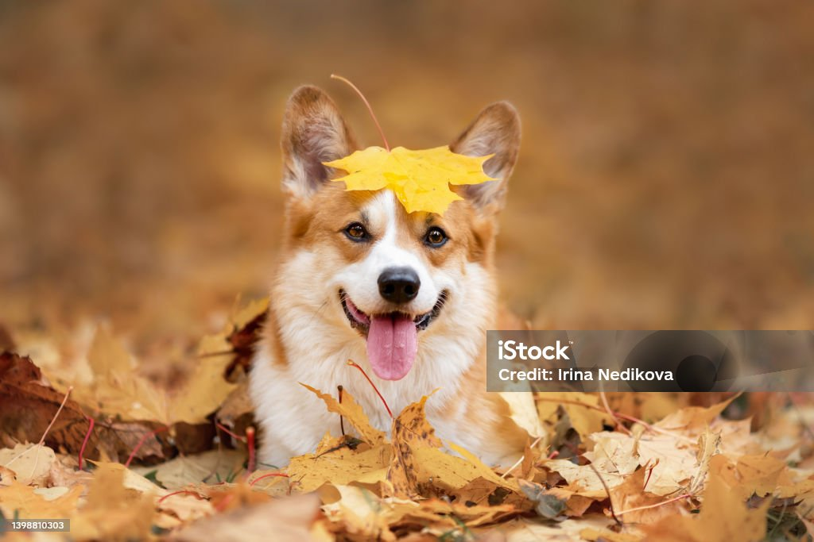
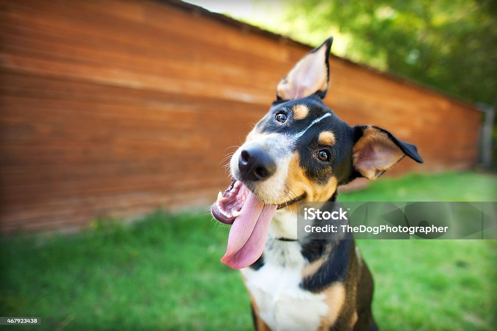
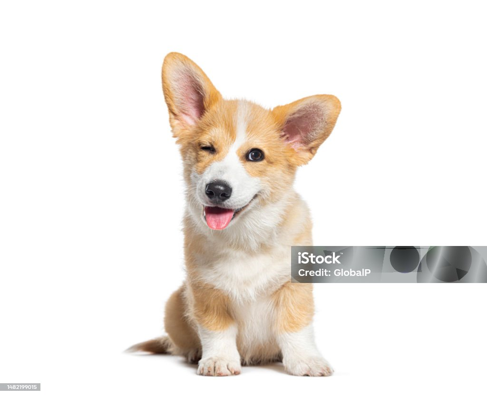
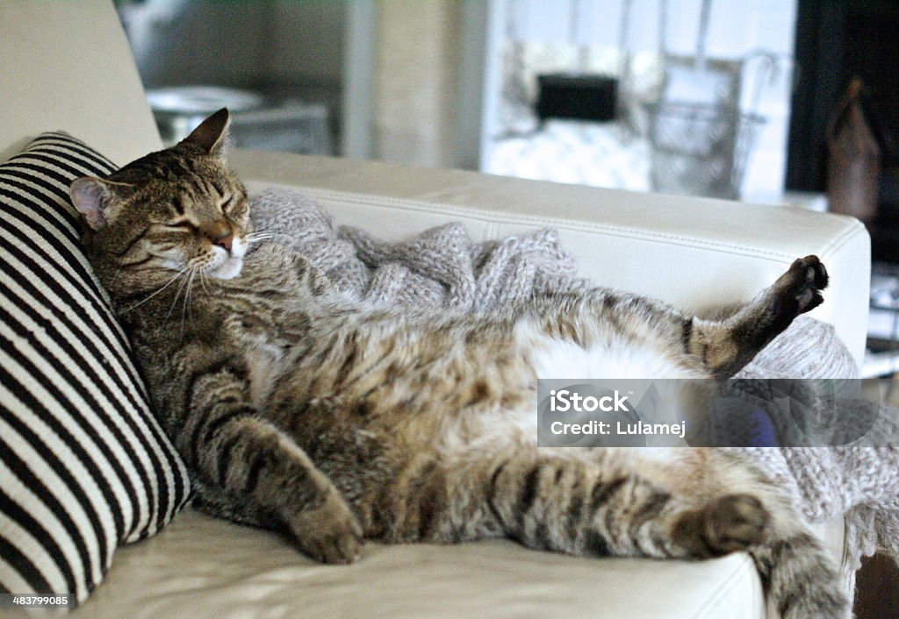
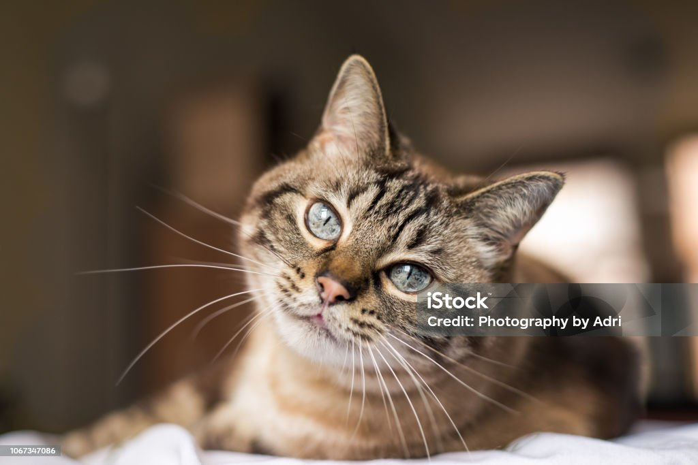
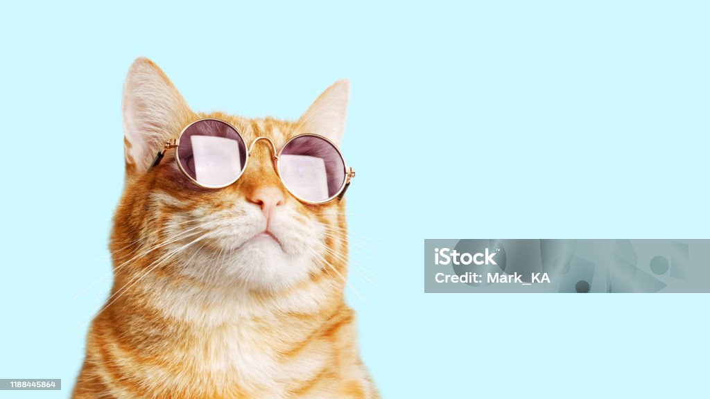
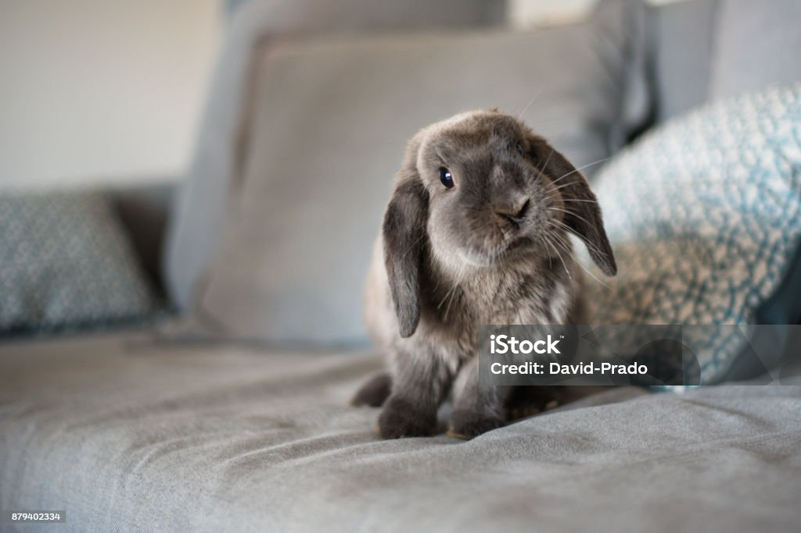
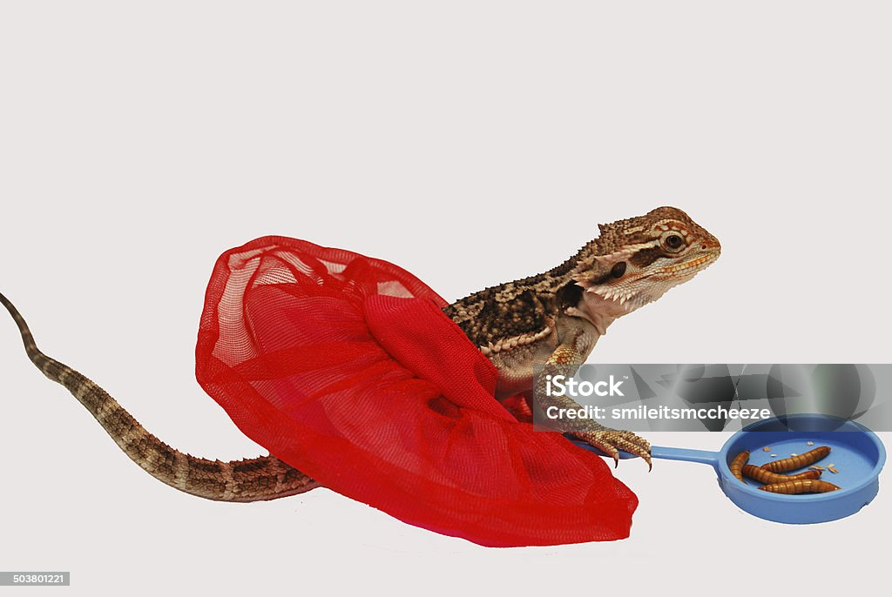

Finn
Species: Dog
Breed: Labrador Retriever Mix
Age: 2 years
Finn is an energetic Labrador mix who loves swimming, playing fetch, and meeting new people.
He's eager to learn and would thrive with an active family that enjoys spending time outdoors.
Status: Available

Maple
Species: Dog
Breed: Pembroke Welsh Corgi
Age: 3 years
Maple is a friendly Corgi who loves walks, squeaky toys, and making new friends.
She's playful, intelligent, and always ready to brighten someone's day with her big smile.
Status: Pending Meet & Greet

Scout
Species: Dog
Breed: Rat Terrier Mix
Age: 1 year
Scout is a curious, energetic pup who loves learning new tricks and making everyone laugh.
He's always ready for an adventure and would thrive with an active family who enjoys walks, games, and plenty of playtime.
Status: Available

Biscuit
Species: Dog
Breed: Pembroke Welsh Corgi
Age: 5 months
Biscuit is a playful Corgi puppy with a big personality and an even bigger heart.
He loves toys, treats, and making new friends, and he's eager to learn with a family ready to help him grow.
Status: Available

Oliver
Species: Cat
Breed: Domestic Short Hair (Brown Tabby)
Age: 4 years
Oliver is a laid-back tabby who enjoys sunny windows, long naps, and quiet evenings with his favorite people.
He's affectionate once he gets to know you and would make a wonderful companion for a calm home.
Status: Available

Skye
Species: Cat
Breed: Lynx Point Siamese Mix
Age: 2 years
Skye is an affectionate and curious cat who loves watching the world from a sunny window.
She enjoys gentle playtime, cozy naps, and will happily curl up beside you after a long day.
Status: Adoption Pending

Jasper
Species: Cat
Breed: Domestic Short Hair (Orange Tabby)
Age: 3 years
Jasper is a confident orange tabby with a playful personality and a love for attention.
Whether he's chasing feather toys or lounging like royalty, he's sure to bring plenty of smiles to his forever home.
Status: Available

Hazel
Species: Rabbit
Breed: Holland Lop
Age: 1 year
Hazel is a gentle Holland Lop who loves fresh greens, cardboard tunnels, and quiet afternoons.
She's curious, easygoing, and looking for a patient family who can provide plenty of space to hop and explore.
Status: In Foster Care

Spike
Species: Lizard
Breed: Bearded Dragon
Age: 2 years
Spike is a friendly bearded dragon who enjoys basking under his heat lamp and snacking on insects and fresh vegetables.
He's calm, easy to handle, and would make a wonderful companion for both new and experienced reptile owners.
Status: Available